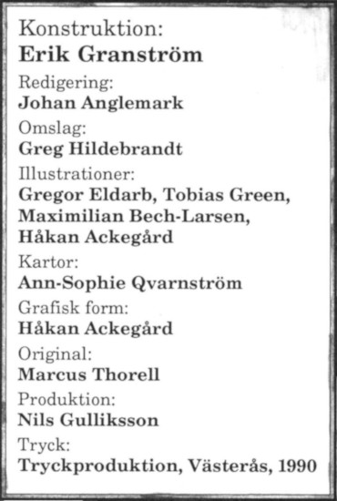

På den stora trappstegspyramiden har Moskoriens främsta spåmän samlats för att tyda tecknen. Nere vid floden ränner en båt med svartklädda män i sanden. De öppnar försiktigt två urnor och glider sedan tyst bort i natten.
Inom någon minut klättrar röda skorpioner i hundratal uppför pyramidens vägg. Siarna har just tystnat i djup trans, när de kommer. En slav från inre Morëlvidyn har sett trädskorpioner tidigare och kastar sig handlöst över kanten. Ingen annan överlever.
Oraklets fyra ögon, fortsättningen på Svavelvinter, är en äventyrsmodul i fyra delar som utspelar sig i Trakorien, men kan spelas fristående. En profetia, kallad Vox Ranzina, har fullbordats efter många år. Den förutsäger den femte konfluxen, en ödespunkt i tid och rum. Innan ranzinernas ledare dör visar han äventyrarna profetian som berättar om de fyra ögonen — fyra viktiga varelser som måste räddas undan okända mördare.
00. Titelblad
Erkännanden
Konstruktion: Erik Granström Omslag: Greg Hildebrandt Illustrationer: Gregor Eldarb, Tobias Green, Maximilian Bech-Larsen, Håkan Ackegård Kartor: Ann-Sophie Qvarnström Digitalisering: Klas Lindberg
För den historieintressarade
Titelbladets lista med erkännanden hade ursprungligen detta innehåll:
